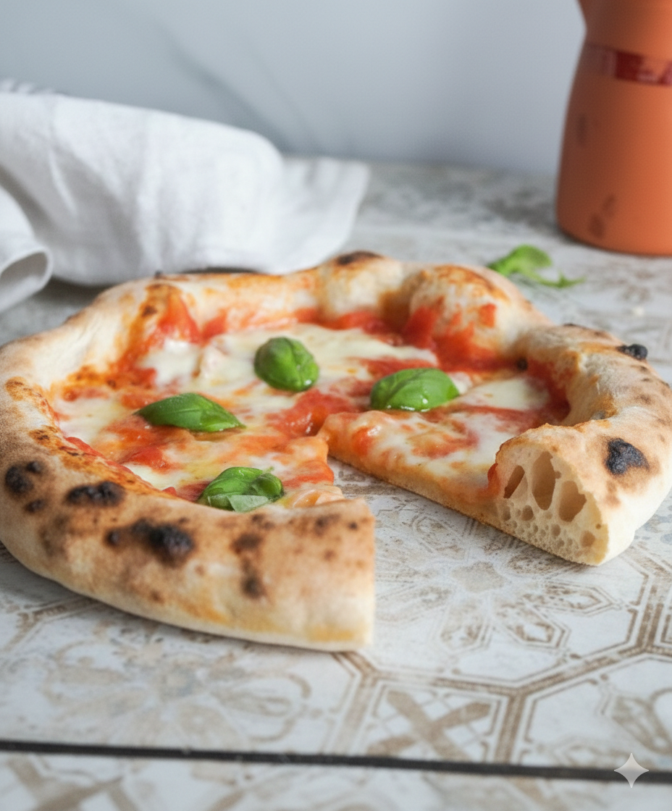

Napolitanian pizza dough
Home

Description
Making a top-tier Neapolitan pizza dough at home doesn't require a starter,
just four essential ingredients: flour, water, salt, and yeast.
To stay true to the strict Neapolitan tradition, avoid any extra additions.
Success lies in the perfect ratios, thorough kneading, and enough time to rest.
That’s all it takes to master an original Neapolitan-style dough in your own kitchen.
Ingredients
- 668 g Flour (Tipo 00)
- 436 g Water (approx. 16-22 °C / 60-72 °F)
- 20 g Salt
- 2 g Fresh yeast
- Olive oil (only for greasing the bowl)
- Semola (for dusting & shaping)
Steps
- Completely dissolve the yeast in cold water. Using your hands is the easiest way to ensure it's fully incorporated.
- Turn your stand mixer to a low setting using the dough hook and gradually add the flour, one spoonful at a time.
- Once you've added about 50–80% of the flour, stir in the salt. Then, continue mixing in the remaining flour.
-
After 10–15 minutes, once the flour has fully absorbed the water and the bowl is clean, remove the dough. Shape it into a ball, cover it (with a cloth or a loose lid), and let it rest at room temperature.
- Pro Tip: Watch the temperature! If the dough exceeds 25°C (77°F), the gluten structure can break down, making it sticky. If this happens, pop the dough in the fridge for 15 minutes before continuing.
- Strengthen the gluten network by performing "stretch and folds" twice, with 30-minute intervals. The dough is ready when it passes the Windowpane Test: you should be able to stretch it thin enough to almost see through it without it tearing.
- Bulk Fermentation (Stockgare): Lightly grease a bowl or container with olive oil. Place the dough inside, cover loosely, and let it cold-ferment in the fridge for 18–19 hours.
-
Dividing (Stückgare): Take the dough out of the fridge. With floured hands (use Semola!), portion and weigh the dough. A Dough Scraper is a lifesaver here
- Recommended portion: approx. 280 g per pizza (for a 30–34 cm diameter).
- Rounding (Rundwirken): Place a portion on a smooth surface (use minimal Semola). Cup your hand over the dough, forming a "claw," and move it in circular motions to "tension" the dough into a smooth, tight ball.
- Place the balls into individual Pizza Dough Boxes or a large container with enough space to grow. Ensure they are covered but not airtight. Lightly coat the balls with olive oil to prevent them from drying out. Let them rest at room temperature for another 4–5 hours.